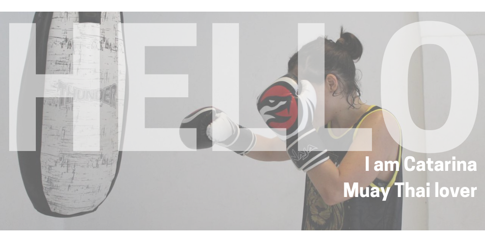

Web Developer
I used HTML, CSS and Bootstrap to design my page. And I also used JavaScript to make the site more interesting. I made some click function to fade in or fade out some informations. I used move over function to increase the sizer of some icons.
I used my Yoga hobby as an inspiration to do second site. I did an cover page and a home page. In the home page I tried to make something similar to the apple watch. Inside a circle if you mouse over the mouse it will make the picture larger and if you click, it will direct you to anothr page. I also used HTML, CSS and Bootstrap to design it.

Another hobby that I used as an inspiration. I used JavaScript to make the scroll function to change pics as you scroll. I also used HTML, CSS and Bootstrap to design.
Canva
Atom
HTML5
CSS
Bootstrap
JavaScript
jQuery
Hyper Terminal
Node.js
Express.js
NPM
Mailchimp
Heroku
Github